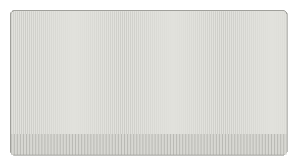
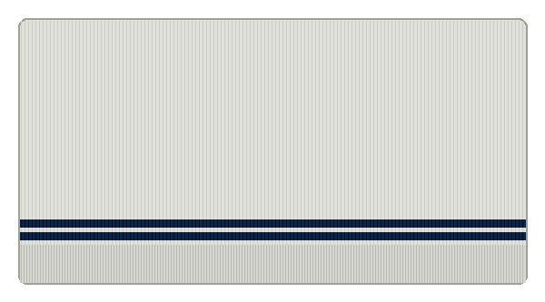
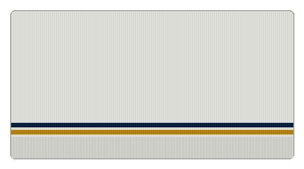
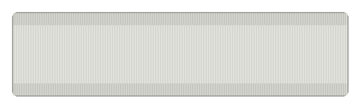

Catálogo técnico
Variantes y medidas

Liso

Dos líneas

Líneas de colores

Banda gruesa

Reversible
Con letras tejidas
| Medida de cuello | Para tallas de prenda | Puño a juego |
|---|---|---|
| 12" | Niño — tallas 6 a 12 | ✓ |
| 14" | Talla 14 hasta S | ✓ |
| 15" | M y L | ✓ |
| 16" | L a XL (según patrón) | ✓ |
| 17" | XL a 4XL | ✓ |
| A medida | Nos mandás tu muestra y calibramos el tejido a tu patrón | ✓ |
Guía general — el calce final depende del patrón de tu prenda. Todas las medidas disponibles en cualquier variante y combinación de colores. Grosor de líneas ajustable según tu muestra.